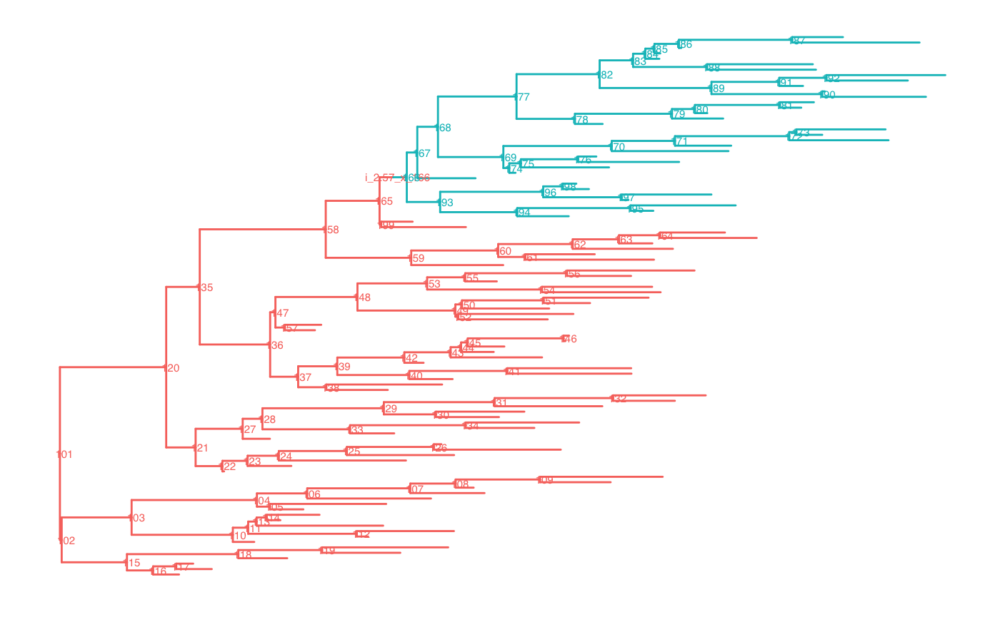

vignettes/PCMBase.Rmd
PCMBase.RmdThe input data for the phylogenetic comparative methods covered in the PCMBase package consists of a phylogenetic tree of \(N\) tips and a \(k\times N\) matrix, \(X\) of observed trait-values, where \(k\) is the number of traits. The matrix \(X\) can contain NAs corresponding to missing measurements and NaN’s corresponding to non-existing traits for some of the tips.
Given a number of traits \(k\), a model is defined as a set of parameters with dimiensionality possibly depending on \(k\) and a rule stating how these parameters are used to calculate the model likelihood for an observed tree and data and/or to simulate data along a tree. Often, we use the term model type to denote a family of models sharing the same rule.
Currently, PCMBase supports Gaussian model types from the so called \(\mathcal{G}_{LInv}\)-family (Mitov et al. 2018). Specifically, these are models representing branching stochastic processes and satisfying the following two conditions (Mitov et al. 2018):
the distribution of the trait \(\vec{X}\), at time \(t\) conditional on the value at time \(s < t\) is Gaussian with the mean and variance satisfying
2.a The expectation depends linearly on the ancestral trait value, i.e. \(\text{E}\big[{\vec{X}(t) \vert \vec{X}(s)}\big] = \vec{\omega}_{s,t} + \mathbf{\Phi}_{s,t} \vec{X}(s)\);
2.b The variance is invariant (does not depend on) with respect to the ancestral trait, i.e. \(\text{V}\big[{\vec{X}(t) \vert \vec{X}(s)}\big] = \mathbf{V}_{s,t}\),
where \(\vec{\omega}\) and the matrices \(\mathbf{\Phi}\), \(\mathbf{V}\) may depend on \(s\) and \(t\) but do not depend on the previous trajectory of the trait \(\vec{X}(\cdot)\).
In the above equation, \(\vec{X}(t)\) is a \(k\)-dimensional real vector, \(\mathbf{H}\) is a \(k\times k\)-dimensional eigen-decomposable real matrix, \(\vec{\theta}\) is a \(k\)-dimensional real vector, \(\mathbf{\Sigma}_{\chi}\) is a \(k\times k\)-dimensional real positive definite matrix and \(W(t)\) denotes the \(k\)-dimensional standard Wiener process.
Biologically, \(\vec{X}(t)\) denotes the mean values of \(k\) continuous traits in a species at a time \(t\) from the root, the parameter \(\mathbf{\Sigma}=\mathbf{\Sigma}_{\chi}\mathbf{\Sigma}_{\chi}^T\) defines the magnitude and shape of the momentary fluctuations in the mean vector due to genetic drift, the matrix \(\mathbf{H}\) and the vector \(\vec{\theta}\) specify the trajectory of the population mean through time. When \(\mathbf{H}\) is the zero matrix, the process is equivalent to a Brownian motion process and the parameter \(\vec{\theta}\) is irrelevant. When \(\mathbf{H}\) has strictly positive eigenvalues, the population mean converges in the long term towards \(\vec{\theta}\), although the trajectory of this convergence can be complex.
So, the OU-model defines the following set of parameters:
X0) : a \(k\)-vector of initial values;H) : a \(k\times k\) matrix denoting the selection strength of the process;Theta) : a \(k\)-vector of long-term optimal trait values;Sigma_x) : a \(k\times k\) matrix denoting the Choleski factor or the stochastic drift variance-covariances;
Together, \(\vec{X}_{0}\), \(\vec{\omega}\), \(\mathbf{\Phi}\), \(\mathbf{V}\) and the tree define a \(kN\)-variate Gaussian distribution for the vector of trait values at the tips. This is the defining property of all Gaussian phylogenetic models. Hence, calculating the model likelihood is equivalent to calculating the density of this Gaussian distribution at observed trait values, and simulating data under the model is equivalent to drawing a random sample from this distribution. The functions PCMMean() and PCMVar() allow to calculate the mean \(kN\)-vector and the \(kN\times kN\) variance covariance matrix of this distribution. This can be useful, in particular, to compare two models by calculating a distance metric such as the Mahalanobis distance, or the Bhattacharyya distance. However, for big \(k\) and/or \(N\), it is inefficient to use these functions in combination with a general purpose multivariate normal implementation (e.g. the mvtnorm::dmvnorm and mvtnorm::rmvnorm), to calculate the likelihood or simulate data assuming an OU model. The main purpose of PCMBase package is to provide a generic and computationally efficient way to perform these two operations.
It is convenient to group model types into smaller subsets with named elements. This allows to use simple names, such as letters, as aliases for otherwise very long model type names. For example, the PCMBase package defines a subset of six so called “default model types”, which are commonly used in macroevolutionary studies. These are model types based on parameterizations of the \(k\)-variate Ornstein-Uhlenbeck (OU) process. All of these six models restrict \(\mathbf{H}\) to have non-negative eigenvalues - a negative eigenvalue of \(\mathbf{H}\) transforms the process into repulsion with respect to \(\vec{\theta}\), which, while biologically plausible, is not identifiable in a ultrametric tree. The six default models are defined as follows:
Calling the function PCMDefaultModelTypes() returns a named vector of the technical class-names for these six models:
# scroll to the right in the following listing to see the full model type names
# and their corresponding alias:
PCMDefaultModelTypes()## A
## "BM__Global_X0__Diagonal_WithNonNegativeDiagonal_Sigma_x__Omitted_Sigmae_x"
## B
## "BM__Global_X0__UpperTriangularWithDiagonal_WithNonNegativeDiagonal_Sigma_x__Omitted_Sigmae_x"
## C
## "OU__Global_X0__Schur_Diagonal_WithNonNegativeDiagonal_Transformable_H__Theta__Diagonal_WithNonNegativeDiagonal_Sigma_x__Omitted_Sigmae_x"
## D
## "OU__Global_X0__Schur_Diagonal_WithNonNegativeDiagonal_Transformable_H__Theta__UpperTriangularWithDiagonal_WithNonNegativeDiagonal_Sigma_x__Omitted_Sigmae_x"
## E
## "OU__Global_X0__Schur_UpperTriangularWithDiagonal_WithNonNegativeDiagonal_Transformable_H__Theta__UpperTriangularWithDiagonal_WithNonNegativeDiagonal_Sigma_x__Omitted_Sigmae_x"
## F
## "OU__Global_X0__Schur_WithNonNegativeDiagonal_Transformable_H__Theta__UpperTriangularWithDiagonal_WithNonNegativeDiagonal_Sigma_x__Omitted_Sigmae_x"
## G
## "BM_drift__Global_X0__h_drift__Diagonal_WithNonNegativeDiagonal_Sigma_x__Omitted_Sigmae_x"
## H
## "BM_drift__Global_X0__h_drift__UpperTriangularWithDiagonal_WithNonNegativeDiagonal_Sigma_x__Omitted_Sigmae_x"The PCMBase package comes with numerous other predefined model types. At present, all these are members of the \(\mathcal{G}_{LInv}\)-family. A list of these model types is returned from calling the function PCMModels().
For each model type, it is possible to check how the conditional distribution of \(\vec{X}\) at the end of a time interval of length \(t\) is defined from an ancestral value \(X_{0}\). In particular, for \(\mathcal{G}_{LInv}\) models, this is the definition of the functions \(\vec{\omega}\), \(\mathbf{\Phi}\) and \(\mathbf{V}\). For example,
PCMFindMethod(PCMDefaultModelTypes()["A"], "PCMCond")## function (tree, model, r = 1, metaI = PCMInfo(NULL, tree, model,
## verbose = verbose), verbose = FALSE)
## {
## Sigma_x <- if (is.Global(model$Sigma_x))
## as.matrix(model$Sigma_x)
## else as.matrix(model$Sigma_x[, , r])
## Sigma <- Sigma_x %*% t(Sigma_x)
## if (!is.null(model$Sigmae_x)) {
## Sigmae_x <- if (is.Global(model$Sigmae_x))
## as.matrix(model$Sigmae_x)
## else as.matrix(model$Sigmae_x[, , r])
## Sigmae <- Sigmae_x %*% t(Sigmae_x)
## }
## else {
## Sigmae <- NULL
## }
## V <- PCMCondVOU(matrix(0, nrow(Sigma), ncol(Sigma)), Sigma,
## Sigmae)
## omega <- function(t, edgeIndex, metaI) {
## rep(0, nrow(Sigma))
## }
## Phi <- function(t, edgeIndex, metaI, e_Ht = NULL) {
## diag(nrow(Sigma))
## }
## list(omega = omega, Phi = Phi, V = V)
## }
## <bytecode: 0x7fc1a23c8560>
## <environment: namespace:PCMBase># The complex maths is implemented in the function PCMCondVOU. You can see its
# R-code by typing :
# PCMBase::PCMCondVOUIn the computer memory, models are represented by S3 objects, i.e. ordinary R-lists with a class attribute. The base S3 class of all models is called "PCM", which is inherited by more specific model-classes. Let us create a BM PCM for two traits:
modelBM <- PCM(model = "BM", k = 2)Printing the model object shows a short verbal description, the S3-class, the number of traits, k, the number of numerical parameters of the model, p, the model regimes and the current values of the parameters for each regime (more on regimes in the next sub-section):
modelBM## Brownian motion model
## S3 class: BM, GaussianPCM, PCM; k=2; p=8; regimes: 1. Parameters/sub-models:
## X0 (VectorParameter, _Global, numeric; trait values at the root):
## [1] 0 0
## Sigma_x (MatrixParameter, _UpperTriangularWithDiagonal, _WithNonNegativeDiagonal; Choleski factor of the unit-time variance rate):
## , , 1
##
## [,1] [,2]
## [1,] 0 0
## [2,] 0 0
##
## Sigmae_x (MatrixParameter, _UpperTriangularWithDiagonal, _WithNonNegativeDiagonal; Choleski factor of the non-heritable variance or the variance of the measurement error):
## , , 1
##
## [,1] [,2]
## [1,] 0 0
## [2,] 0 0
##
## One may wonder why in the above description, p = 8 instead of 10 (see also ?PCMParamCount). The reason is that both, the matrix Sigma and the matrix Sigmae, are symmetric matrices and their matching off-diagonal elements are counted only one time.
Model regimes are different models associated with different parts of the phylogenetic tree. This is a powerful concept allowing to model different evolutionary modes on different lineages on the tree. Let us create a 2-trait BM model with two regimes called a and b:
## Brownian motion model
## S3 class: BM, GaussianPCM, PCM; k=2; p=14; regimes: a, b. Parameters/sub-models:
## X0 (VectorParameter, _Global, numeric; trait values at the root):
## [1] 0 0
## Sigma_x (MatrixParameter, _UpperTriangularWithDiagonal, _WithNonNegativeDiagonal; Choleski factor of the unit-time variance rate):
## , , a
##
## [,1] [,2]
## [1,] 0 0
## [2,] 0 0
##
## , , b
##
## [,1] [,2]
## [1,] 0 0
## [2,] 0 0
##
## Sigmae_x (MatrixParameter, _UpperTriangularWithDiagonal, _WithNonNegativeDiagonal; Choleski factor of the non-heritable variance or the variance of the measurement error):
## , , a
##
## [,1] [,2]
## [1,] 0 0
## [2,] 0 0
##
## , , b
##
## [,1] [,2]
## [1,] 0 0
## [2,] 0 0
##
## Now, we can set some different values for the parameters of the model we’ve just created. First, let us specify an initial value vector different from the default 0-vector:
modelBM.ab$X0[] <- c(5, 2)X0 is defined as a parameter with S3 class class(modelBM.ab$X0). This specifies that X0 is global vector parameter shared by all model regimes. This is also the reason, why the number of parameters is not the double of the number of parameters in the first model:
PCMParamCount(modelBM)## [1] 8PCMParamCount(modelBM.ab)## [1] 14The other parameters, Sigma_x and Sigmae_x are local for each regime:
# in regime 'a' the traits evolve according to two independent BM processes (starting from the global vecto X0).
modelBM.ab$Sigma_x[,, "a"] <- rbind(c(1.6, 0),
c(0, 2.4))
modelBM.ab$Sigmae_x[,, "a"] <- rbind(c(.1, 0),
c(0, .4))
# in regime 'b' there is a correlation between the traits
modelBM.ab$Sigma_x[,, "b"] <- rbind(c(1.6, .8),
c(.8, 2.4))
modelBM.ab$Sigmae_x[,, "b"] <- rbind(c(.1, 0),
c(0, .4))The above way of setting values for model parameters, while human readable, is not handy during model fitting procedures, such as likelihood maximization. Thus, there is another way to set (or get) the model parameter values from a numerical vector:
param <- double(PCMParamCount(modelBM.ab))
# load the current model parameters into param
PCMParamLoadOrStore(modelBM.ab, param, offset=0, load=FALSE)## [1] 14print(param)## [1] 5.0 2.0 1.6 0.0 2.4 1.6 0.8 2.4 0.1 0.0 0.4 0.1 0.0 0.4## [1] 4.984402282 1.992651044 1.618906926 -0.009241985 2.386414173
## [6] 1.583571380 0.803764246 2.410107630 0.082857763 0.009688693
## [11] 0.419981785 0.112986828 -0.005950268 0.387270594# set the new parameter vector
PCMParamLoadOrStore(modelBM.ab, param2, offset = 0, load=TRUE)## [1] 14print(modelBM.ab)## Brownian motion model
## S3 class: BM, GaussianPCM, PCM; k=2; p=14; regimes: a, b. Parameters/sub-models:
## X0 (VectorParameter, _Global, numeric; trait values at the root):
## [1] 4.984402 1.992651
## Sigma_x (MatrixParameter, _UpperTriangularWithDiagonal, _WithNonNegativeDiagonal; Choleski factor of the unit-time variance rate):
## , , a
##
## [,1] [,2]
## [1,] 1.618907 -0.009241985
## [2,] 0.000000 2.386414173
##
## , , b
##
## [,1] [,2]
## [1,] 1.583571 0.8037642
## [2,] 0.800000 2.4101076
##
## Sigmae_x (MatrixParameter, _UpperTriangularWithDiagonal, _WithNonNegativeDiagonal; Choleski factor of the non-heritable variance or the variance of the measurement error):
## , , a
##
## [,1] [,2]
## [1,] 0.08285776 0.009688693
## [2,] 0.00000000 0.419981785
##
## , , b
##
## [,1] [,2]
## [1,] 0.1129868 -0.005950268
## [2,] 0.0000000 0.387270594
##
## The first functionality of the PCMBase package is to provide an easy way to simulate multiple trait data on a tree under a given (possibly multiple regime) PCM.
For this example, first we simulate a birth death tree with two parts “a” and “b” using the phytools R-package:
# make results reproducible
set.seed(2, kind = "Mersenne-Twister", normal.kind = "Inversion")
# number of regimes
R <- 2
# number of extant tips
N <- 100
tree.a <- PCMTree(rtree(n=N))
PCMTreeSetLabels(tree.a)
PCMTreeSetPartRegimes(tree.a, part.regime = c(`101` = "a"), setPartition = TRUE)
lstDesc <- PCMTreeListDescendants(tree.a)
splitNode <- names(lstDesc)[which(sapply(lstDesc, length) > N/2 & sapply(lstDesc, length) < 2*N/3)][1]
tree.ab <- PCMTreeInsertSingletons(
tree.a, nodes = as.integer(splitNode),
positions = PCMTreeGetBranchLength(tree.a, as.integer(splitNode))/2)
PCMTreeSetPartRegimes(
tree.ab,
part.regime = structure(c("a", "b"), names = as.character(c(N+1, splitNode))),
setPartition = TRUE)
palette <- PCMColorPalette(2, c("a", "b"))
PCMTreePlot(tree.ab) + ggtree::geom_nodelab(size = 2)
# plot(tree.ab, show.tip.label=FALSE,
# edge.color = palette[PCMTreeGetRegimesForEdges(tree.ab)])Now we can simulate data on the tree using the modelBM.ab$X0 as a starting value:
traits <- PCMSim(tree.ab, modelBM.ab, modelBM.ab$X0)Calculating a model likelihood for a given tree and data is the other key functionality of the PCMBase package.
PCMLik(traits, tree.ab, modelBM.ab)## [1] -409.1877
## attr(,"X0")
## [1] 4.984402 1.992651
## attr(,"class")
## [1] "VectorParameter" "_Global" "numeric"
## attr(,"description")
## [1] "trait values at the root"For faster and repeated likelihood evaluation, I recommend creating a likelihood function for a given data, tree and model object. Passing this function object to optim would save the need for pre-processing the data and tree at every likelihood evaluation.
# a function of a numerical parameter vector:
likFun <- PCMCreateLikelihood(traits, tree.ab, modelBM.ab)
likFun(param2)## [1] -409.1877
## attr(,"X0")
## [1] 4.984402 1.992651
## attr(,"class")
## [1] "VectorParameter" "_Global" "numeric"
## attr(,"description")
## [1] "trait values at the root"Mitov, Venelin, Krzysztof Bartoszek, Georgios Asimomitis, and Tanja Stadler. 2018. “Fast likelihood evaluation for multivariate phylogenetic comparative methods: the PCMBase R package.” arXiv.org, September, arXiv:1809.09014. http://arxiv.org/abs/1809.09014.